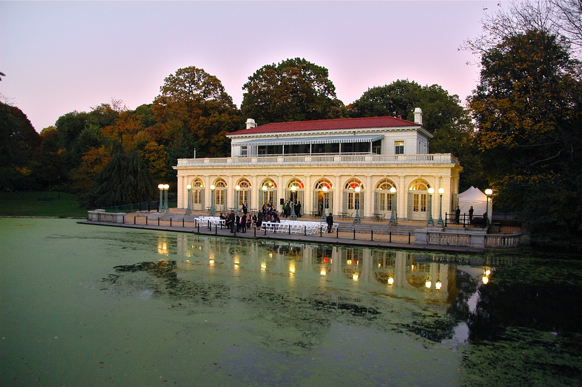

Designed and constructed over a thirty-year period (1865-1895) by Frederick Law Olmsted and Calvert Vaux,
the masterminds behind Central Park,
Prospect Park has blossomed into a premiere destination for Brooklyn visitors and residents alike.;
Prospect Park was so revolutionary in its time that many considered the Park a work of art in itself.
Others were critical of the idea of building a single, large park in the wealthiest section of Brooklyn rather than several smaller parks at different locations to serve a wider public.
The idea of a single, large park won out, and its backers overcame their opponents in Brooklyn politics by having the park built by a state-appointed commission.
Olmsted and Vaux engineered the Park to recreate in real space the pastoral, picturesque, and aesthetic ideals expressed in hundreds of paintings. Breaking ground in June, 1866, they created the large Long Meadow out of hilly upland pasture interspersed with peat bogs,
they moved and planted trees, hauled topsoil and created a vast unfolding turf with trees placed singly and in groups to approximate the English pastoral style of landscape which had emerged in England in the previous century.
Prospect Park's designers had recent precedents in the pastoral style in this country,
notably Mount Auburn Cemetery near Boston and Green-Wood Cemetery a few blocks away in Brooklyn.
By the 1850s and '60s, pastoralism was very popular in landscape design in eastern North America.
Both Central and Prospect Parks are considered by some landscape historians to be among the best examples of the type.
The designers themselves felt they had greater success in Brooklyn than in New York because the Prospect Park site presented fewer obstacles than the Central Park site, where they had to contend with two reservoirs, a relatively narrow, rectangular site, and a requirement that four city streets cross over the site.
The design formula at Prospect Park included elements of both the picturesque and the sublime ideals, the picturesque being represented by the Ravine and its series of pools, waterfalls, and defiles.
Although the sublime ideal would be difficult to realize in the gentle Long Island topography,
the designers wanted Lookout Hill to be a place of broad views out over Prospect Lake,
the farmland beyond, and the bay and ocean in the distance.
The design also created a visual screen consisting of earth forms and trees around the perimeter to heighten the effect of seemingly limitless rural scenery by screening out views of buildings, traffic,
and other aspects of the growing city around the park, but the designers did not foresee the high-rise buildings built in the twentieth century.
In designing the watercourse Olmsted and Vaux also took advantage of the pre-existing glacier-formed kettle ponds and lowland outwash plains.
A winding naturalistic stream channel with several ponds feeds a sixty-acre (24 ha) lake.
They crafted the watercourse to include a steep, forested Ravine – perhaps their greatest masterpiece of landscape architecture – all with significant river edge flora and fauna habitats.
This was all done to give the urban dweller a "sub-conscious" experience of nature within the city as Olmsted believed it was possible and necessary to provide such nourishment for the general public in the overwhelming urban environments of his time
